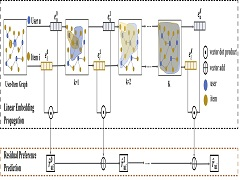
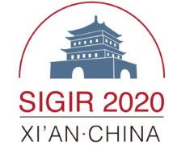

Lab:
Key Laboratory of Knowledge Engineering with Big Data,
School of Computer Science and Technology,
Hefei University of Technology(HFUT).
Office: Room 904, Kejiao A Building, Feicui Campus of HFUT, Hefei, Anhui, China, 230601.
I am looking for self-motivated undergraduate students, master and Ph.D students. Feel free to contact me!
- Data Mining
- Recommender Systems
- Data Mining and User Modeling in Social Multimeida Platforms
- 2020.08 I have given a talk at iFLYTEK Research Institute, with the topic of “Neural Graph based Recommendation Models and Applications”.
- 2020.07 One paper on neural social platform recommendation has been accepted by TIST. Congratulations to Junwei!
- 2020.07 I am honored to receive the Youth Talent Promotion Project of Anhui Province.
- 2020.04. Two full papers on graph based recommendation have been accepted by SIGIR 2020. Congratulations to Yonghui!
- 2020.01 One paper on explainable review based recommendation has been accepted by The Web Conference 2020. Congratulations to Peijie!
- 2019.11 One paper on effective and efficient neural graph recommendation has been accepted by AAAI 2020. Congratulations to Lei Chen!
- 2019.11 I have given a tutorial on social media based recommendation at advanced seminar series on intelligent automation.

[AAAI 2020] Lei Chen, Le Wu, Richang Hong, Kun Zhang, Meng Wang. Revisiting Graph based Collaborative Filtering: A Linear Residual Graph Convolutional Network Approach.
[PDF][PPT][Code]
[AAAI 2020] Lei Chen, Le Wu, Richang Hong, Kun Zhang, Meng Wang. Revisiting Graph based Collaborative Filtering: A Linear Residual Graph Convolutional Network Approach.
[PDF][PPT][Code]
In this paper, we revisit graph convolutional network based approaches for recommendation.
We simplify the graph neural network based architecture for CF with simple linear convolutions, which is specifically designed for CF without any explicit user and item features.
We then propose a residual architecture for predication to alleviate the over-smoothing issue in neural graph based recommendation.
The proposed model is easy to tune, and receives state-of-the-art performance.
Welcome to try our code!

[SIGIR 2020] Le Wu, Yonghui Yang, Kun Zhang, Richang Hong, Yanjie Fu, Meng Wang.
Joint Item Recommendation and Attribute Inference: An Adaptive Graph Convolutional Network Approach.
[PDF][PPT][Code]
[SIGIR 2020] Le Wu, Yonghui Yang, Kun Zhang, Richang Hong, Yanjie Fu, Meng Wang.
Joint Item Recommendation and Attribute Inference: An Adaptive Graph Convolutional Network Approach.
[PDF][PPT][Code]
In this paper, we tackle the problem of joint item recommendation and attribute inference on social platforms.
Instead of treating the attribute inference as a preprocessing task, we argued that user(item) attributes and the preference behavior are correlated.
We define the two tasks in an attributed graph, and propose an Adaptive Graph Convolutional network approach.
Experimental results clearly show the effectiveness of our proposed model. Welcome to try our code!
Conference Papers
- Le Wu, Yonghui Yang, Kun Zhang, Richang Hong, Yanjie Fu, Meng Wang. Joint Item Recommendation and Attribute Inference: An Adaptive Graph Convolutional Network Approach. The 43rd International ACM SIGIR Conference on Research and Development in Information Retrieval (SIGIR 2020), 679-688, July 25-30, Xi’an, China.
[PDF]
- Le Wu, Yonghui Yang, Lei Chen, Defu Lian, Richang Hong, Meng Wang. Learning to Transfer Graph Embeddings for Inductive Graph based Recommendation. The 43rd International ACM SIGIR Conference on Research and Development in Information Retrieval (SIGIR 2020), 1211-1220, Xi’an, China.
[PDF]
- Peijie Sun, Le Wu, Kun Zhang, Yanjie Fu, Richang Hong, Meng Wang. Dual Learning for Explainable Recommendation: Towards Unifying User Preference Prediction and Review Generation. The Web Conference (WWW 2020), 837-847, April 20-24, Taipei, China.
[PDF]
- Lei Chen, Le Wu*, Richang Hong, Kun Zhang, Meng Wang. Revisiting Graph based Collaborative Filtering: A Linear Residual Graph Convolutional Network Approach. The 34th AAAI Conference on Artificial Intelligence (AAAI 2020), 27-34, February 7-12, New York, USA.
[PDF]
- Le Wu, Peijie Sun, Yanjie Fu, Richang Hong, Xiting Wang, Meng Wang. A Neural Influence Diffusion Model for Social Recommendation. The 42th International ACM SIGIR Conference on Research and Development in Information Retrieval (SIGIR 2019), 235-244, July 21-25, Pairs, France.
[PDF]
- Le Wu, Lei Chen, Yonghui Yang, Richang Hong, Yong Ge, Xing Xie, Meng Wang. Personalized Multimedia Item and Key Frame Recommendation. The 28th International Joint Conference on Artificial Intelligence (IJCAI 2019), 1431-1437, August 10-16, Macao, China.
[PDF]
- Min Hou, Le Wu, Enhong Chen, Zhi Li, Vincent W Zheng, Qi Liu. Explainable Fashion Recommendation: A Semantic Attribute Region Guided Approach. The 28th International Joint Conference on Artificial Intelligence (IJCAI 2019), 4681-4688, August 10-16, Macao, China.
[PDF]
- Peijie Sun, Le Wu*, Meng Wang. Attentive Recurrent Social Recommendation. The 41st International ACM SIGIR Conference on Research and Development in Information Retrieval (SIGIR 2018), 185-194, July 8-12, Ann Anbor, MI, USA.
[PDF]
- Wenjuan Yang, Le Wu, Xueliang Liu, Chunxiao Fan. MFCC: An Efficient and Effective Matrix Factorization Model based on Co-clustering. The 9th International Conference on Internet Multimedia Computing and Service (ICIMCS 2017), 360-370, Qingdao, 2018.
[PDF]
- Xunpeng Huang, Le Wu, Enhong Chen, Hengshu Zhu, Qi Liu, Yijun Wang. Incremental Matrix Factorization: A Linear Feature Transformation Perspective. The 26th International Joint Conference on Artificial Intelligence (IJCAI 2017), 1901-1908, Melbourne, Australia, August 19-25, 2017.
[PDF]
- Le Wu, Yong Ge, Qi Liu, Enhong Chen, Bai Long, Zhenya Huang. Modeling Users Preferences and Social Links in Social Networking Services: a Joint-Evolving Perspective, The 30th AAAI Conference on Artificial Intelligence (AAAI 2016), 279-286, Phoenix, Arizona USA, February 12-17, 2016.
[PDF]
- Le Wu, Qi Liu, Enhong Chen, Xing Xie, Chang Tang. Product Adoption Prediction: A Multi-factor View, The 15th SIAM International Conference on Data Mining (获最佳论文提名，Best of SDM 2015), 154-162,Vancouver, BC, Canada, April 30-May 2, 2015.
[PDF]
- Le Wu, Yin Zhu, Nicholas Jing Yuan, Enhong Chen, Xing Xie, Yong Rui. Predicting Smartphone Adoption Social Networks. The 19th Pacific-Asia Conference on Knowledge Discovery and Data Mining(PAKDD 2015), 472-485, Ho Chi Minh City, Vietnam, May 19-22, 2015.
[PDF]
- Le Wu, Enhong Chen, Qi Liu, Linli Xu, Tengfei Bao, Lei Zhang. Leveraging Tagging for Neighborhood-aware Probabilistic Matrix Factorization, The 21st ACM Conference on Information and Knowledge Management (CIKM 2012), 1854-1858, Maui, HI, USA, October 29-November 02, 2012.
[PDF]
Journal Papers
- Junwei Li, Le Wu*, Richang Hong, Kun Zhang, Yong Ge, Yan Li. A Joint Neural Model for User Behavior Prediction on Social Networking Platforms. ACM Transactions on Intelligent Systems and Technology (ACM TIST), accepted, 2020.
[PDF]
- Le Wu, Lei Chen, Richang Hong, Yanjie Fu, Xing Xie, Meng Wang. A Hierarchical Attention Model for Social Contextual Image Recommendation. IEEE Transactions on Knowledge and Data Engineering (IEEE TKDE), accepted, 2019. (10.1109/TKDE.2019.2913394)
[PDF]
- Lei Chen, Le Wu, Zhenzhen Hu, Meng Wang. Quality-aware Unpaired Image-to-image Translation. IEEE Transactions on Multimedia (IEEE TMM), 21(10):2664-2674, October 2019.
[PDF]
- Le Wu, Peijie Sun, Richang Hong, Yong Ge, Meng Wang. Collaborative Neural Social Recommendation. IEEE Transactions on Systems Man and Cybernetics: Systems (IEEE TSMC: Systems), accepted, 2018. (DOI: 10.1109/TSMC.2018.2872842)
[PDF]
- Le Wu, Qi Liu, Richang Hong, Enhong Chen, Yong Ge, Meng Wang. Product Adoption Rate Prediction in a Competitive Market. IEEE Transactions on Knowledge and Data Engineering (IEEE TKDE), 30(2):325-338, February 2018.
[PDF]
- Le Wu, Yong Ge, Qi Liu, Enhong Chen, Richang Hong, Junping Du, Meng Wang. Modeling the Evolution of Users' Preferences and Social Links in Social Networking Services. IEEE Transactions on Knowledge and Data Engineering (IEEE TKDE), 29(6): 1240-1253, June 2017.
[PDF]
- Le Wu, Qi Liu, Enhong Chen, Nicholas Jing Yuan, Guangming Guo, Xing Xie. Relevance meets Coverage: A Unified Framework to Generate Diversified Recommendation. ACM Transactions on Intelligent Systems and Technology (ACM TIST), 7(3): 39:1-39:30, February 2016.
[PDF]
- 孙光福，吴乐，刘淇，朱琛，陈恩红. 基于时序行为的协同过滤推荐算法. 软件学报，vol. 24(11), pages: 2721-2733, 2013.
[PDF]
- Member of Special Interest Group on Information Retrieval, Chinese Information Processing Society of China
- Member of Special Interest Group on Artificial Intelligence and Pattern Recognition，China Computer Federation
- Member of IEEE, ACM
- Conference Reviewers:
- Journal Reviewers: